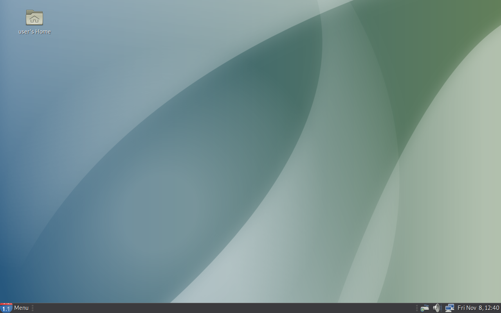

AlisaOS uses only 400+ MB of RAM with no apps open, and uses MATE for that to happen. AlisaOS has also good browsers like Firefox (preferred for Linux Users) and Yandex Browser (preferred for Windows users). AlisaOS also has games like: robotfindskitten and pacman4console. To Use AlisaOS, you can have atleast 1024 MB of RAM (1 GB of RAM) and 20 GB of storage. To install AlisaOS, read the text below. |  |